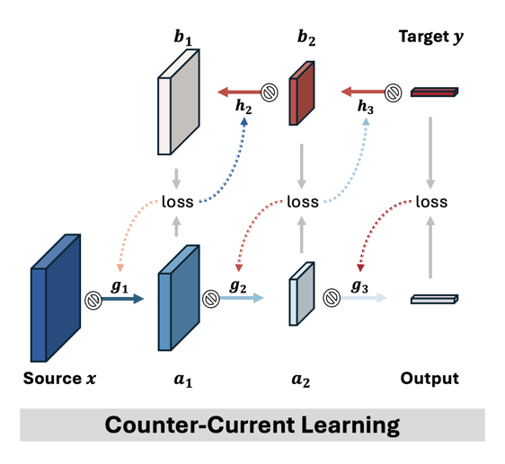
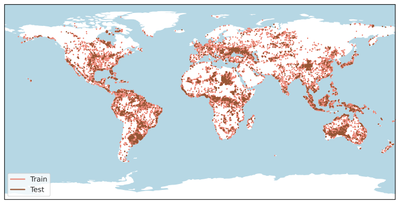
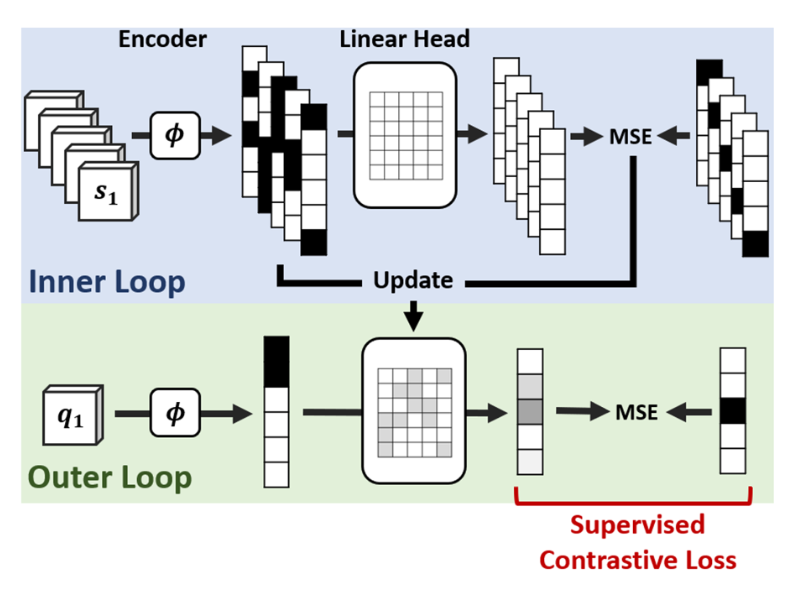

About
I build world models that infer and predict the hidden dynamics of real-world interactions: recovering 3D motion and physics from observation, and generating controllable video. I am a Cornell Foundational AI PhD Fellow advised by Prof. Bharath Hariharan, currently a Student Researcher at Meta, and previously an Applied Scientist Intern at Amazon. Before Cornell, I trained as a physician (M.D., Taiwan).
Research
3D & physical world modeling
Completing occluded scene geometry and its motion (amodal scene flow, ongoing), and recovering rigid-body physics from monocular video by generating simulator configurations as language (Δynamics, CVPR 2026).
Video generation & in-context learning
A single video model that learns new tasks from one demonstration via spatiotemporal analogy, generalizing to unseen tasks and sensing modalities (ViGeo).
LLM agents
Code-executing, tool-using agents and how to evaluate them on real scientific workflows (UnivEarth, ACL 2026 Findings).
Selected Research
* equal contribution
Unifying Video Tasks via Spatiotemporal Analogy
A text-free framework that executes and generalizes to diverse, unseen video tasks by completing a single visual analogy on a spatiotemporal canvas.
Δynamics: Language-Based Representation for Inferring Rigid-Body Dynamics From Videos
A vision-language model that uses language as a unified representation to infer rigid-body dynamics from video, bridging perception and physics simulation.

Towards LLM Agents for Earth Observation
Are AI agents ready for reliable Earth observation? A benchmark for code-executing agents on real satellite data.

Counter-Current Learning: A Biologically Plausible Dual Network Approach for Deep Learning
A non-backpropagation learning algorithm inspired by counter-current exchange in biological systems.

AllClear: A Comprehensive Dataset and Benchmark for Cloud Removal in Satellite Imagery
The largest collection of satellite images with cloud occlusions, with a benchmark for cloud removal.

MAML Is a Noisy Contrastive Learner in Classification
We show that model-agnostic meta-learning (MAML) acts as contrastive learning.
All publications (11)
- [S.2]Unifying Video Tasks via Spatiotemporal AnalogyChia-Hsiang Kao, Belinda Zeng, Bharath Hariharan, Menglin JiaUnder review[arXiv][Project]
- [C.9]Δynamics: Language-Based Representation for Inferring Rigid-Body Dynamics From VideosChia-Hsiang Kao, Cong Phuoc Huynh, Chien-Yi Wang, Noranart Vesdapunt, Stefan Stojanov, Bharath Hariharan, Oleksandr Obiednikov, Ning ZhouCVPR 2026[arXiv][Project]
- [C.8]Towards LLM Agents for Earth ObservationChia-Hsiang Kao, Wenting Zhao, Cheryl Lam, Aarush Umap, Shreelekha Revankar, Samuel Speas, Snehal Bhagat, Rajeev Datta, Cheng Perng Phoo, Utkarsh Mall, Carl Vondrick, Kavita Bala, Bharath HariharanACL 2026 Findings; ICML 2025 TerraBytes Workshop[arXiv][Project]
- [C.7]Counter-Current Learning: A Biologically Plausible Dual Network Approach for Deep LearningChia-Hsiang Kao, Bharath HariharanNeurIPS 2024[arXiv][Code]
- [C.6]AllClear: A Comprehensive Dataset and Benchmark for Cloud Removal in Satellite ImageryHangyu Zhou*, Chia-Hsiang Kao*, Cheng Perng Phoo, Utkarsh Mall, Bharath Hariharan, Kavita BalaNeurIPS Datasets and Benchmarks Track 2024[arXiv][Project][Code]
- [C.5]Caduceus: Bi-directional Equivariant Long-Range DNA Sequence ModelingYair Schiff, Chia-Hsiang Kao, Aaron Gokaslan, Tri Dao, Albert Gu, Volodymyr KuleshovICML 2024[arXiv][Project][Code]
- [C.4]Advancing DNA Language Models: The Genomics Long-Range BenchmarkChia-Hsiang Kao*, Evan Trop*, McKinley Polen*, Yair Schiff*, Bernardo P. de Almeida, Aaron Gokaslan, Thomas Pierrot, Volodymyr KuleshovAAAI 2023 Workshop; ICLR 2024 MLGenX Workshop
- [S.1]FedBug: A Bottom-Up Gradual Unfreezing Framework for Federated LearningChia-Hsiang Kao, Yu-Chiang Frank WangarXiv[arXiv][Code]
- [C.3]MEG-Based Classification and Grad-CAM Visualization for Major Depressive and Bipolar Disorders with Semi-CNNChun-Chih Huang, Intan Low, Chia-Hsiang Kao, Chuan-Yu Yu, Tung-Ping Su, Jen-Chuen Hsieh, Yong-Sheng Chen, Li-Fen ChenIEEE EMBC 2022[Paper]
- [C.2]MAML Is a Noisy Contrastive Learner in ClassificationChia-Hsiang Kao, Wei-Chen Chiu, Pin-Yu ChenICLR 2022[arXiv][Code][Blog]
- [C.1]Demystifying T1-MRI to FDG18-PET Image Translation via Representational SimilarityChia-Hsiang Kao, Yong-Sheng Chen, Li-Fen Chen, Wei-Chen ChiuMICCAI 2021
Experience
Honors & Awards
Mentoring & Service
Mentoring: Hangyu Zhou (AllClear, NeurIPS 2024 D&B); Cheryl Lam and Aarush Umap (UnivEarth, ACL 2026 Findings)
Conference reviewer: NeurIPS (2021, 2024–2026), ICLR (2025–2027), ICML (2025), ECCV (2026), COLM (2026), AAAI (2025), AISTATS (2025), AutoML (2022)
Journal reviewer: CVIU (2022), Computers & Electrical Engineering (2024), IEEE TETCI (2024)
Outside research: surfing, lifeguard, running, and music.